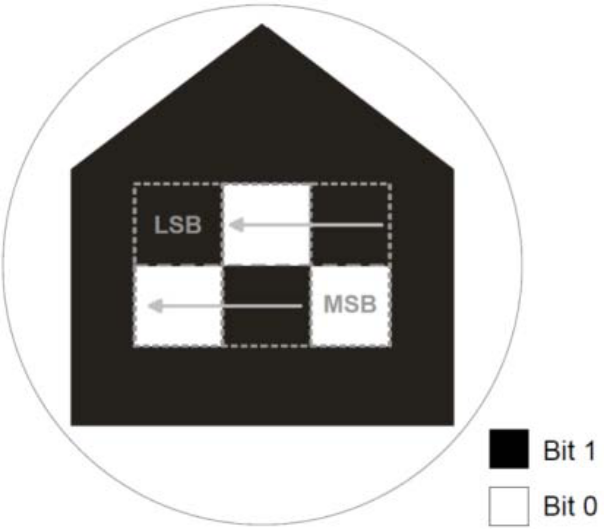

The TWB is a web-based platform for experiments in robotics. It provides access to the ingredients of an experiment (robot platforms and environments) with navigation (mapping, localization, slam).
As shown in figure 1 the experimental field has a size of 3.6m x 3.6m. There are up to 4 subfields, which contain a camera for the TWB tracking system.
Fig 1: TWB Schematic
Each robot platform, which shall be tracked by the TWB tracking system, gets a specific marker on top as shown in figure 2. The markers are unique in position (x- and y-axis) and direction (rotation around z-axis).
Fig 2: TWB Markers (old and new)
TWB Publication by Felix Werner, Andry Tanoto, Jaan Welzel and Ulrich Rückert